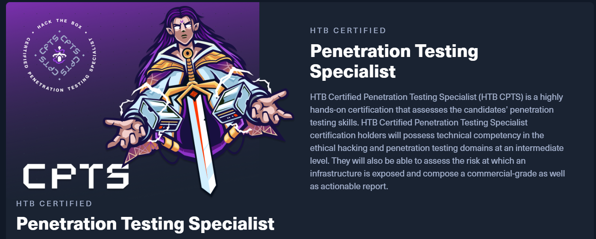
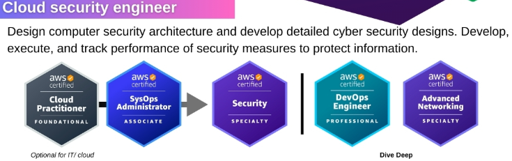
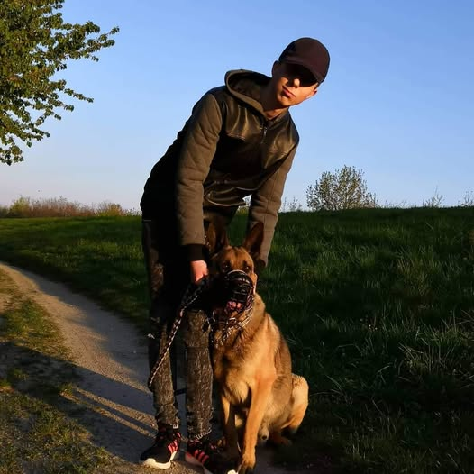

About Me
I am Fourth-year BSc (Hons) Cloud Computing student with a Bc. in Computing and strong focus on networking and cloud technologies. Experienced with network solutions, troubleshooting and problem-solving, supported by voluntary mentoring and leadership experience. Aiming to build a career in cloud computing and security. Seeking an IT role where I can apply my networking and cloud skills, and expand my already build theory knowladge to practise.
I enjoy solving complex technical problems, designing secure cloud solutions. This site showcases my education, projects, experience, and technical skills in a professional, employment-ready format.
Education
Technological University of Dublin
BSc (Honours) in Cloud Computing – Level 8
Dublin, Ireland
Dundalk Institute of Technology
BSc in Computing – Network Stream – Level 7
Graduated with Distinction
Dundalk, Ireland
Private Secondary Vocational School of Polytechnics in Nitra
Mechanics – Mechatronics
Nitra, Slovakia
Projects
Project Py.py - Host & System Information Script
A Python script that gathers host information (CPU, RAM, disk, OS details),
performs ping tests, and can export system data into a CSV report. Designed
for basic diagnostics and infrastructure lab work.
Details of the script:
- Collects host details using standard Python libraries and psutil.
- Retrieves OS, hardware and user information (CPU, RAM, disks, username and directories).
- Performs ping tests against the local host to verify connectivity.
- Displays an interactive text menu so the user can select tests and reports.
- Logs high-level CPU and memory utilisation statistics.
- Exports all collected data to
SystemInfo.csvfor reporting and later analysis. - Organises the output values from the test either into the CLI or to the CSV format that can be later reviewed through Excel
- Designed to be easily extended with additional checks, like port or service tests.
- The design of the Python script can be restructured based on the needs to either perform offensive or defensive tasks
- The edited version of python code was deployed on AWS Lambda and can be tested through the AWS API Gateway.
- Displayed code is provided as contribution to the open-source python code community
Optional: connect this section to an AWS Lambda health-check API.
Data Visualisation – World Happiness & Quality of Life Dashboard
This Tableau dashboard compares quality-of-life indicators across countries using data from the World Happiness Report.
The dashboard analyses how various factors influence happiness and social well-being, using visualisations as the primary comparison tool.
Additionally, we utilise the seven stages of data visualisation practices throughout the analysis. to comply with set standards
Dashboard desing includes:
- Calculated fields for emotional well-being, corruption, and other indicators that have a clear impact on the quality of life.
- The dashboard filters allows user to select specific years and countries for tailored data visualizations in the given year.
- Enables forecasting and reviewing public awareness of corruption using trend lines, determining whether awareness is increasing or decreasing.
Download CSV data used in this project
Raw World Happiness datasets (unfiltered):
Filtered / processed CSV outputs used in Tableau:
The raw datasets contain the original World Happiness data, while the filtered CSV files hold the cleaned and transformed data used directly in the Tableau visualisations and analysis.
Experience
Volunteer Tutor of Python
Dundalk Institute of Technology
- Mentored students in Python, helping them understand core programming concepts.
- Guided students through problem solving and small projects.
- Encouraged experimentation and critical thinking to build confidence.
Brand Ambassador
Raiffeisen Bank – Bratislava
- Represented the brand at events and engaged with customers to promote services.
- Communicated technical and financial information clearly to a non-technical audience.
- Developed strong communication and interpersonal skills in a professional setting.
Skills
- Network Design
- Problem Solving
- Cloud Solutions
- Mentoring Skills
- Communication
- Flexibility
- Teamwork
- Technical Writing
- GitHub
- Python Programming
- Tableau Data Visualisation Software
- Knowladge of AWS and Azure cloud platforms
- Azure Piplelines and DevOps
- Cisco Switches and Routers
Academic and Profesional Referrals
I am pleased to provide this reference for Samuel Zemes who has volunteered as a mentor with our DkIT CoderDojo club over the last number of years. Throughout his time with us, Samuel demonstrated maturity, technical ability, and a genuine commitment to supporting younger learners aged between 7 and 17 years in developing their confidence with computing. As a mentor, Samuel consistently showed patience, clarity, and enthusiasm when guiding our ninjas through the monthly coding challenges. He supported students working with various technologies including Scratch, HTML/CSS, and introductory Python with micro:bit, always ensuring that each youth felt encouraged and capable. His ability to break down complex ideas into simple, approachable steps made him an invaluable presence at our sessions. Whether helping a nervous beginner debug their first animation or offering thoughtful suggestions to more advanced students, he adapted his approach to meet each learner’s needs. He also contributed to the positive, inclusive atmosphere that CoderDojo values so highly, modelling teamwork, curiosity, and respect.
Samuel has been reliable, punctual, and proactive throughout his voluntary work. He quickly became someone we could depend on to help set up sessions, support learners, and contribute ideas for improving activities. His attitude and work ethic reflect a young person with strong potential and a genuine interest in technology and community engagement.
I have no hesitation in recommending Samuel Zemes for future opportunities in education, technology, or any role that values communication, responsibility, and problem-solving. He would be an asset to any team.
If further information is required, I would be happy to provide it.
Kind regards,
Peter
Champion DkIT CoderDojo
Planned Certification Path
These are the certifications I am planning to undertake to deepen my skills in cloud security and penetration testing. They are part of my medium- to long-term learning roadmap.
HTB Certified Penetration Testing Specialist (CPTS)

The CPTS certification is an advanced for individuals who have completed the CJCA certification or a similar certification. The curriculum covers key areas such as risk assessment, vulnerability exploitation, and professional penetration testing report writing. The primary goal of the CPTS certification is to provide practical experience that builds intermediate penetration testing skills through real-world scenario simulations. Earning the CPTS certification enables individuals to conduct penetration tests effectively and enhances their cybersecurity capabilities.
AWS Cloud Security Engineer Track

The planned AWS certification path for a cloud security engineer role begins with the Cloud Practitioner and SysOps Administrator certifications. These provide a solid foundation in the AWS environment, focusing on its operations and management. Next, obtaining a Security Certification showcases the holder's understanding of security standards and their ability to design, implement, and manage secure AWS environments. This ensures the protection of cloud systems, data, and applications from potential threats. Finally, pursuing the DevOps Engineer Professional and Advanced Networking Speciality certifications allows individuals to design and automate highly scalable applications while building and optimising complex, secure network architectures across AWS and hybrid environments.
HTB Certified Junior Cybersecurity Associate (CJCA)
CJCA is an entry-level cybersecurity certification that helps holders obtain a junior level skill set in Security Operations Center (SOC) and offensive skills. This certification serves as a foundation for pursuing future cybersecurity credentials. The plan is to complete this certification while building a solid foundation at Dundalk Institute of Technology, which focuses on networking. Additionally, it will enhance skill sets in vulnerability assessment, SIEM-assisted monitoring, and defensive security operations within enterprise environments.
Hobbies & Interests
Dungeons & Dragons
Dungeons & Dragons is a captivating blend of storytelling, strategy, and collaboration, where a group of players creates their own fictional characters and navigates a rich world crafted by the Dungeon Master. This immersive game requires problem-solving, effective communication, and teamwork, as players work together to overcome challenges and achieve their goals. With each session, participants embark on unique adventures filled with excitement, creativity, and shared experiences that strengthen their bonds as a group.
My Dog

Since childhood, I have grown up with dogs in both the city and the countryside. My dog Monty have given me beautiful memories and taught me patience, as well as the art of bribery with treats to encourage learning. Each dog that my family owned had its own unique personality, and that was the beauty of it. I would definitely classify the saying "a dog is a man's best friend" as true.
Motorcycles
My motorcycle obsession began in my early adulthood. Riding a motorcycle provides an excellent opportunity for me to connect with others who share the same interest in these beautiful machines. When I'm on the road, I always feel a sense of freedom surrounding me. My mind focuses on what's in front of me, which allows me to clear my head.
Contact Me
You can reach me using the contact details below.
- Name: Samuel Attila Zemes
- Location: Dublin, Ireland / Bratislava , Slovakia
- Email: email@example.com
- Phone: [phone removed] / [phone removed]
- LinkedIn: linkedin.com/in/samuel-zemes-736a62228
The button above provides an additional links and view of the same information.